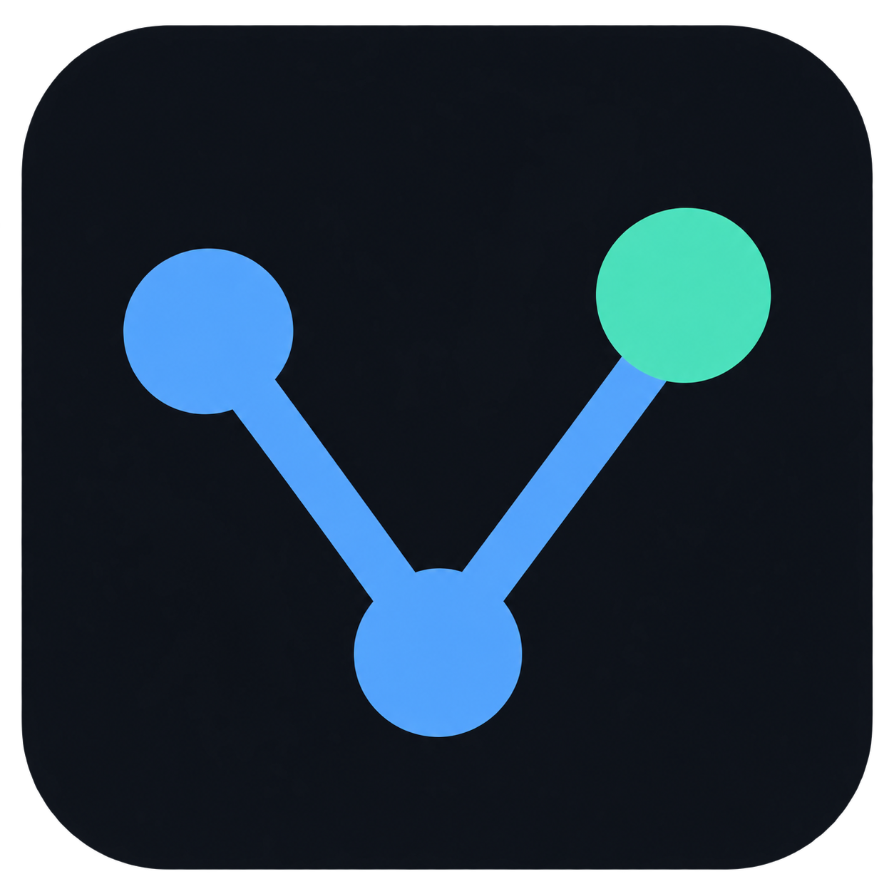

从变化开始，
理解每一行代码
查看暂存与未暂存的差异，在单栏与双栏之间切换；结合语法高亮、搜索和多标签预览，专注于值得关注的部分。

GitViews GitHub从 AI 生成的代码到日常开发，GitViews 帮你看清改了什么、来自哪里，以及下一步该做什么。
GitViews 聚焦查看与理解代码变更，也提供日常 Git 管理所需的操作。从只读开始，需要时再开启高级功能。
查看暂存与未暂存的差异，在单栏与双栏之间切换；结合语法高亮、搜索和多标签预览，专注于值得关注的部分。
按路径或内容搜索，浏览提交历史和分支图；在仓库、工作树和子模块之间切换。
默认以只读模式浏览仓库；准备好操作时，可选择启用暂存、提交、分支管理和远端同步。
选择内置 Git，或使用本地 Git 及其 hooks、签名和凭据配置。多仓库、储藏、合并与变基也能在同一个工作区中管理。
服务层完整加载中位数
桌面启动至仓库模型就绪中位数
选择适合你系统的版本，打开仓库，开始查看。
前往下载